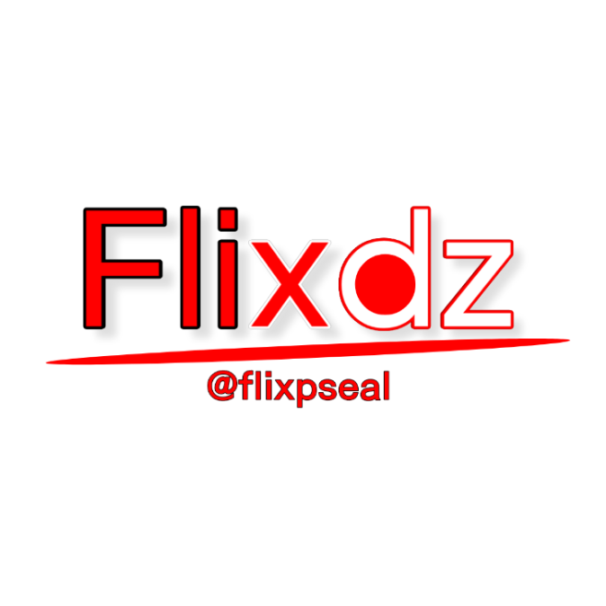

Saya adalah seseorang yang sangat tertarik dengan dunia teknologi terutama Software, Website ataupun Android sudah menjadi kesukaan saya sejak lama.
Alumni SMK Nurul Islam Jakarta ke-35 Jurusan Rekayasa Perangkat Lunak
Jika kalian ingin mengembangkan website ini atau berkolaborasi dengan projek lain, silakan hubungi saya: